ArcGIS Pro ビギナーズマニュアル
この演習では、次のような図を作成しながら、ArcGIS Proの基本操作とGISデータを用いた地図作成の手法を解説します。

実習用データ
Tokyoをダウンロードしてください。
起動
ArcGIS Proを起動すると、ログインフォームが表示される。 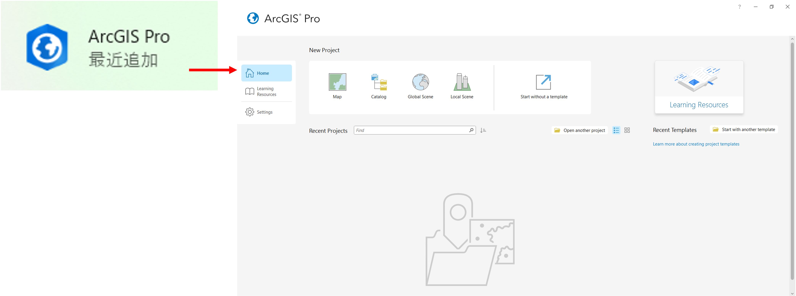
ログイン後に、Mapをクリックする。Projectの名前と保存先を指定してOKをクリックする。

レイヤの設定ができるウィンドウ（緑枠）で各レイヤの見え方を調整すると、地図が表示されるウィンドウ（青枠）に反映される。 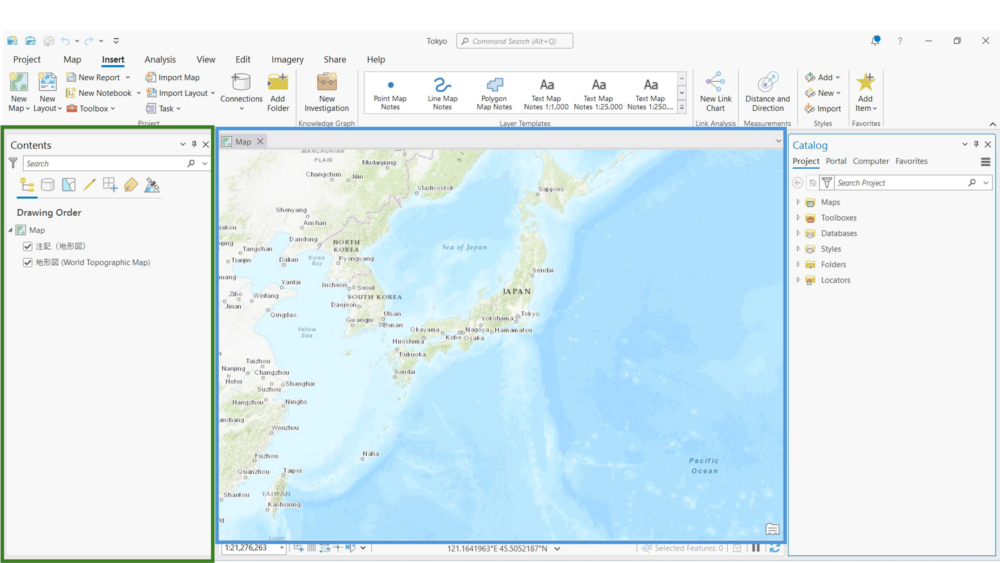
レイヤの追加
ベクタデータ：ポイントデータ
Add Folderを選択して、レイヤが入っているフォルダを選択する。
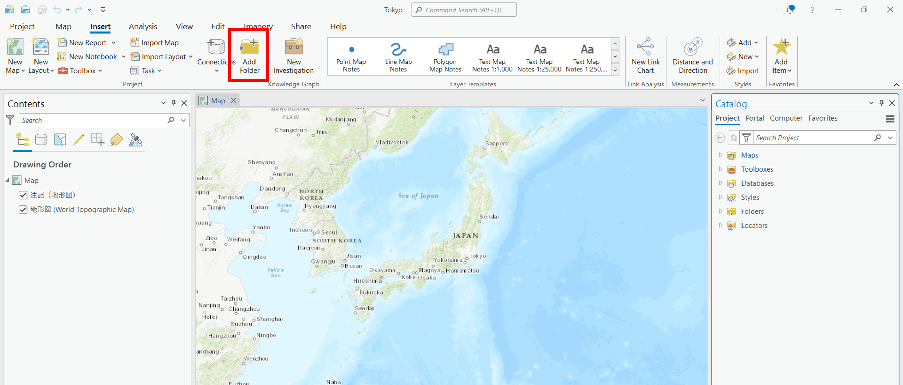
Catalog > Foldersから、追加したレイヤを探し、必要なものをマップウィンドウにドラッグ＆ドロップする。
今回は、cvs_jgd2011_9.shpを選択する。

以下のように地図が表示される。

ベクタデータ：ラインデータ
同じ方法で、ラインデータも追加する。今回は、river_9kei.shpを選択する。

ベクタデータ：ポリゴンデータ
同じ方法で、ポリゴンデータも追加する。今回は、tokyo_23ku_jgd2011_9kei.shpを選択する。

ラスタデータ
同じ方法で、ラスタデータも追加する。今回は、tokyo_srtme.tifを選択する。ウィンドウが表示されるがYesを選択する。
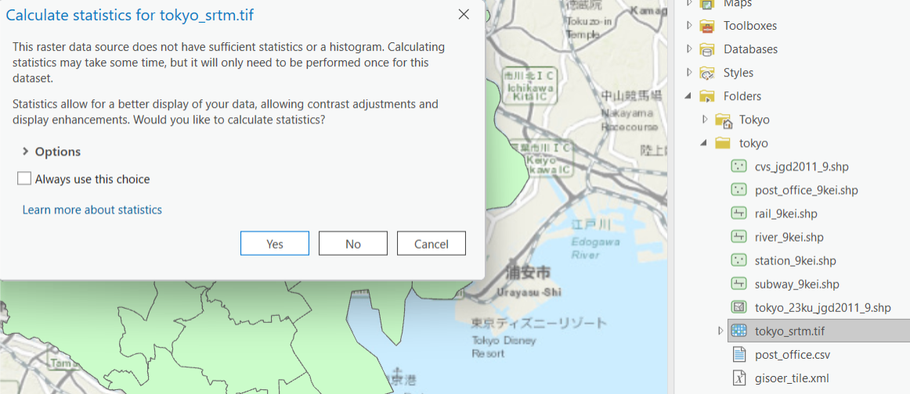
地図をクリックすると、ラスタデータの各セルの値（このデータは標高）が確認できる。 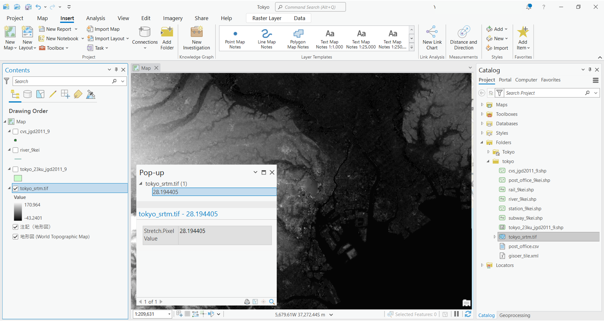
テキストデータからポイントデータを作成
post_ofifce.csvを読み込むと、レイヤウィンドウに表示される。post_ofifce.csvの上で右クリックし、Create Points From Table > XY Table To Pointを選択し、以下のように設定する。
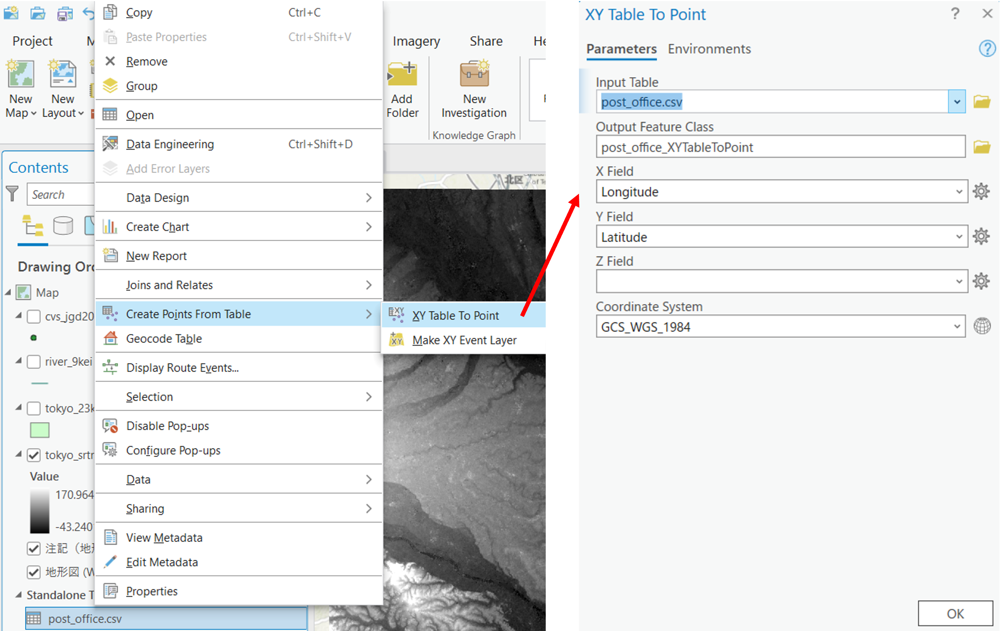
正しく設定すると、以下のように地図が表示される。 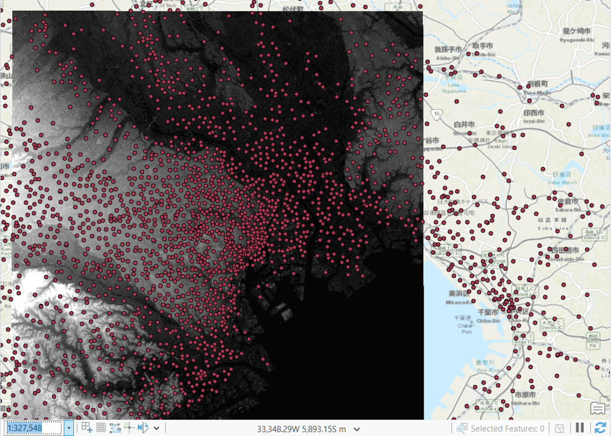
レイヤの管理
レイヤウィンドウでは、レイヤのチェックボックスの切り替えや、上下の移動で地図表示を管理できる。

右クリック、Removeでレイヤを地図から削除できる。レイヤそのものを削除したい場合は、元のフォルダ内のレイヤを削除する。
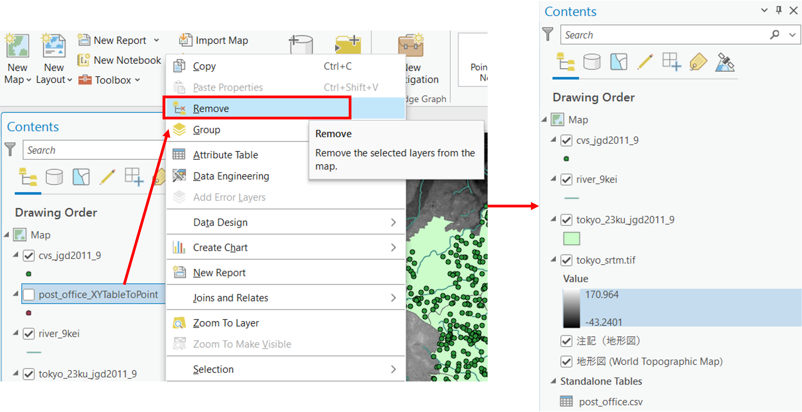
機能
Arc GIS Proには、以下のような代表的な機能がある。タブ内に表示されていないものは、Toolboxなどから検索できる。
- Project
- Map
- Insert
- Analysis
- View
- Edit
- Imagery
- Share
- Help

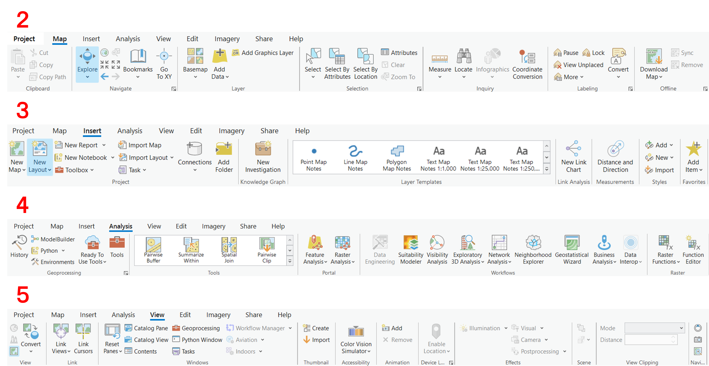
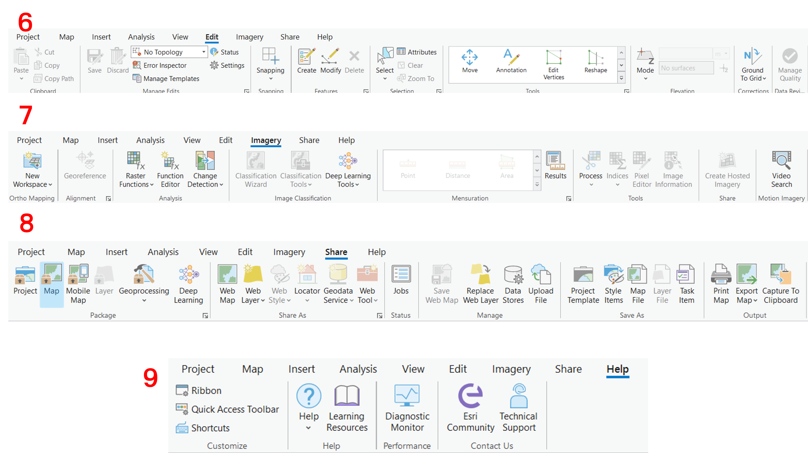
属性テーブルと選択機能
GISでは、属性情報と地図情報を連携して管理したり、地図表示したりできる。ArcGIS Proでは、レイヤウィンドウで、対応するレイヤの上で右クリックし、Attribute Tableを開く。属性テーブル上で選択したものは、地図上でも選択される。

Select使うと、地図からでも検索できる。選択表示を終了したい場合はClearをクリックする。

属性テーブルでは、選択したもののみを表示できたり、選択を反転したりできる。

プロパティ
プロパティでは、データの空間座標系などを確認できる。 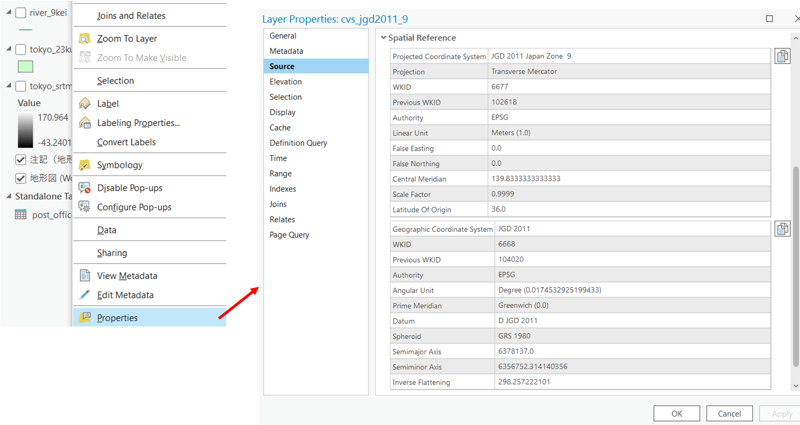
シンボルの変更
ArcGIS Proでは、GISデータのスタイルを変更できる。ここでは、一括で同じシンボルにする場合と、属性情報に基づいて可視化する場合を紹介する。
Properties > Symbologyを選択し、ポイントデータの表現を以下のように変更する。Gallery tabでスタイルを決め、Propertiesタブでサイズや色を調整できる。
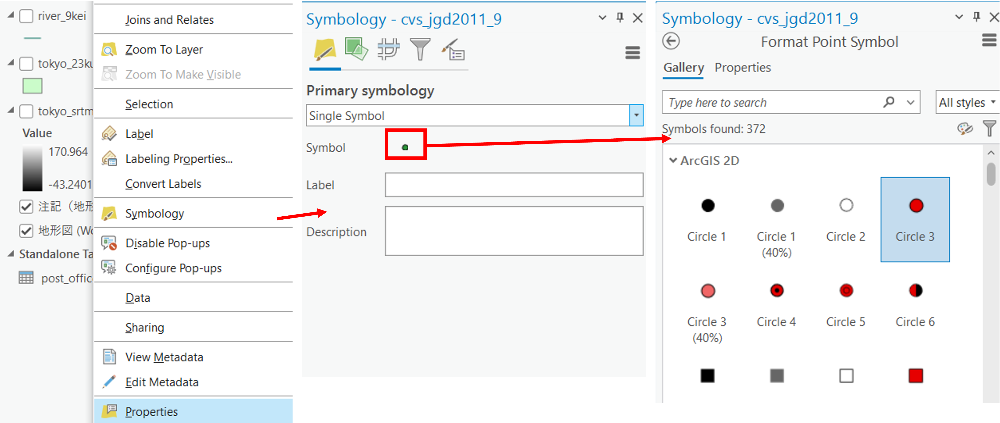

属性情報に基づく可視化
右上の三本線から、Vary symbology by attributeを選択する。Unique Valuesのアイコンをクリックする。
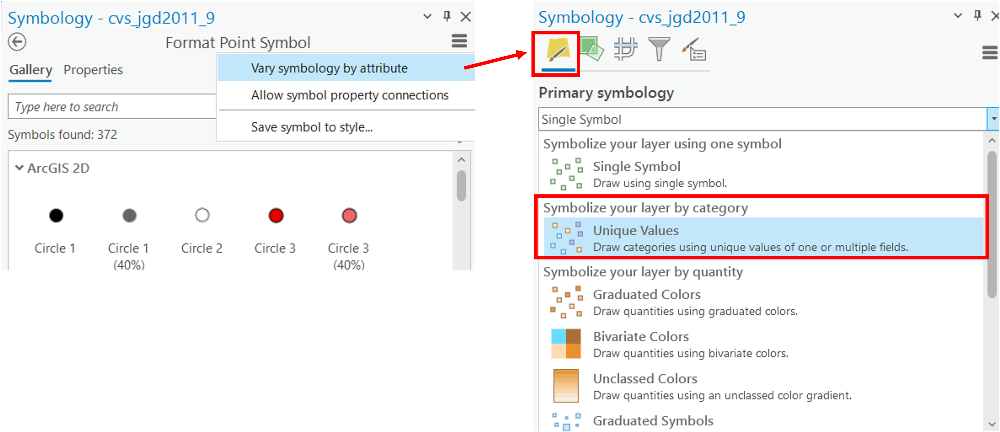
対応する属性テーブルのヘッダーを指定（今回はen_name）すると、以下のようにシンボルが分類される。

ラベルの追加
属性情報を用いると、以下のようにデータにラベルを追加できる。


背景地図の追加（地理院タイル）
https://esrijapan.github.io/gsi-wmts/layers0.xml をWMTSレイヤとして設定する。

写真を選択すると国土地理院の空中写真が表示できる。 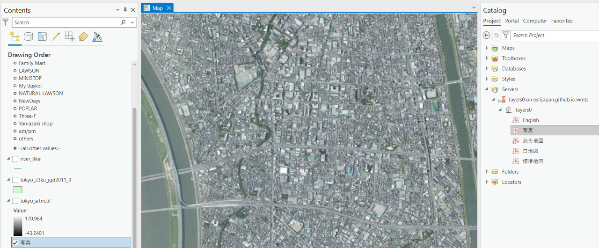
地図のレイアウト
最初に示した完成例のように、地図をレイアウトするために、Insert > New Map Layoutを選択する。

地図の設定
用紙内に地図を追加する 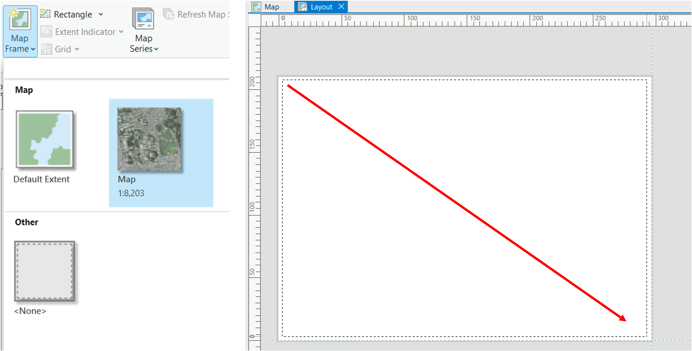
Layout > Activateをクリックして、地図の表示範囲を調整する。

最後に、Layout > Close Activationを選択して、地図の範囲を確定する。

方位
次に方位を追加する。

縮尺
次に縮尺を追加する。 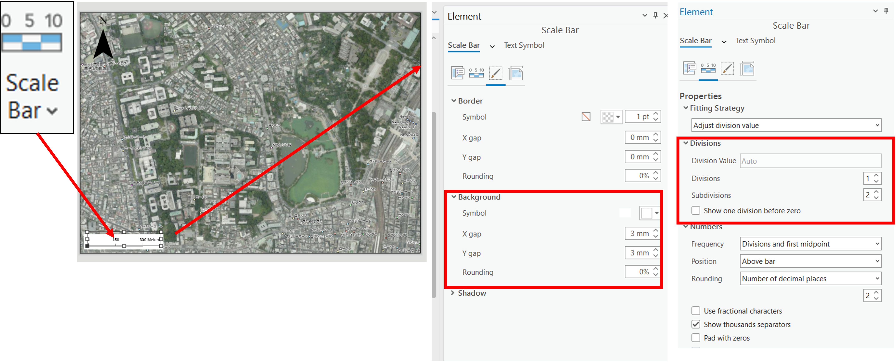
凡例
次に凡例を追加する。

タイトル
次にタイトルを追加する。

地図の書き出し
Share > Export Layoutから地図を書き出す。

プロジェクトの保存
Project > Save Projectを実行する。
課題
課題用データ
を用いて、以下の地図を作成してください。